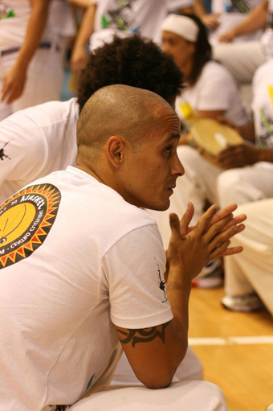

Счастье привалило!
Ну все, дождалась моя фанатская душа — в России, в столице открылся-таки филиал Centro Cultural Senzala de Capoeira! Курирует его любимый уже многими из нас CM Chiquinho.
В феврале группа проведет первый семинар, а в октябре — первую церемонию батизадо.
В разработке сайт группы, а пока на официальной странице вконтакте уже можно найти все контакты, места, адреса, а также крайне важную информацию (для фанатов вроде меня так точно) — расписание сензальских мероприятий. И, конечно, там же можно порадоваться за новую группу, пожелать ей роста, сил и muito Axeeeeeeeeeee!

Сontra mestre Chiquinho (Francisco Nascimento De Lima) родился 15 мая 1978 года в Рио.
Он с самого начала попал в группу Capoeira Senzala, где начал тренироваться с Mestre Zumbi (сейчас M. Zumbi преподает в США).
С 2006 года CM Chiquinho живет и преподает в Венгрии (Будапешт). Среди его учеников уже есть обладатели звания Professor, ведущие свои школы в Европе и Бразилии.
Chiquinho курирует филиалы Centro Cultural Senzala de Capoeira в Австрии, Венгрии, Хорватии, Бразилии, а теперь — и в России.
Я уже неоднократно писала везде, где можно, что Шикиньу по умолчанию отличный капоэйрист и кроме того, отличный педагог. Он любит саму капоэйру, любит играть ее и учить ей, одинаково достойно играет с представителями всех стилей капоэйры, что, пожалуй, доказывает универсальность его собственного стиля.
Теперь вы сами можете убедиться в этом — в феврале намечается семинар в Москве. Очень рекомендую не пропустить и поучаствовать. Возможно (скрестили пальцы), на пару дней нам повезет увидеть звезду Сензалы и в Петербурге, в гостях у наших школ и, при благополучном расположении звезд, на вечеринке форро.
Я еще раз поздравляю всех нас, особенно себя и тех, кто разделяет мою безграничную любовь к капоэйре Сензала.
Благодарю CM Chiquinho и представительницу его группы в России — Евгению (Andorinha) за новый повод для встреч у pe do berimbau.
Chama e, chama e, chama e Senzala chama e!
Ну и никуда без любимого видео: